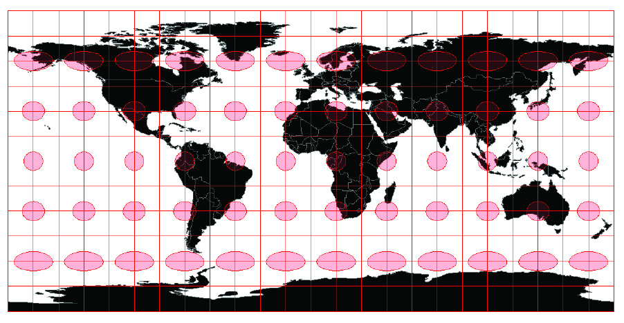
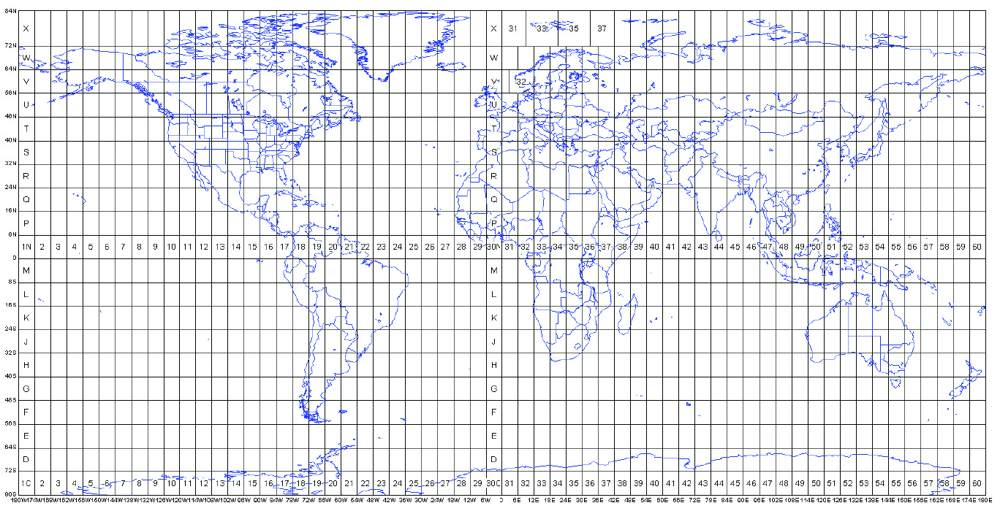

Geospatial
Visualization
School of Architecture
Dr. Timothy Norris
tnorris@miami.edu
Christopher Mader
cmader@med.miami.edu
Image: D.M. Swart
Artistic cartography: creative ways to peel the globe
A few exercises
Geocoding
> give addresses lat/long coordinates
Joining tables
> attach attributes to spatial geometries
Creating data
> enter data by hand
Geocoding
list of address information, usually comma separated values (csv)
ArcGIS geocoding service
Very accurate and up-to-date geocoding engine
Uses credits - see
Understanding Credits
"Free" online geocoding services
Census.gov
- somewhat accurate
Texas A&M
- needs free account
geocode.io
- first 1000/day free, then you pay
More, ... google "online geocoders"
in the GIS ...
Import as csv with lat/long coordinates as columns
Google "create x,y points from csv" in [GIS of choice]
Joining tables - 1
Census data example: attributes and geography come separate
Get Census data from the "Census American Factfinder"
Advanced Search > Show Me All
On left side select "Topics"
On left side select "Geographies"
When ready > click "Download"
Get geographic data from "Census Geography Program"
Look for "Tiger/Line Geodatabases"
Select "State Level Geodatbases" and your state
Joining tables - 2
Census data example: attributes and geography come separate
in the GIS ...
Import as csv with no geometries
> must delete one header row first
Import selected layers from geodatabase
> must include geometry from Census data
In geometry layer, find "Joins" in the layer properties
> either double click or right click
Join based on GEO.id2 and GEOID
Symbolize from layer properties
Creating data
Remember: the project file/folder is NOT the data
Create a data layer
Layer > create
In ArcCatalog window > right click > create new
Define the columns you want ...
Make Layer editable
QGIS - the little yellow pencil
ArcGIS - right click > make layer editable
Add features
Try to maintain one scale
Remember to save often
Turn off layer editing
Coordinate Reference Systems
Datum
Geographic coordinate system
Projected coordinate system
Geospatial data must have:
datum + geographic coordinate system
Projected coordinate systems are optional
(but needed for measurement)
Datum
Center of the earth?
That which is given?
Ellipsoid
mathematically defined surface approximating the shape of the earth
Geoid
surface of the earths gravity field - approx sea level
Geographical Coordinate Systems
Latitude and Longitude -
spherical coordinates
Very common, but cannot be used for measurement
Things to remember:
ESPG - European Petroleum Survey Group
WGS 84 - most common globally - ESPG:4326
NAD 83 - most common in the United States - ESPG:4269
Projected Coordinate Systems
meters or feet -
Cartesian coordinates
Used for measurement and mapping
Things to remember:
Projected Coordinate Systems are
specific
to the area being mapped
In the USA: the "State Plane System"
Around the Globe: the "UTM Grid"
For web based mapping systems
WGS 84 Web Mercator - ESPG:3857
Projected Coordinate Systems (more)
Projection Surfaces
Tissot and Distortion

Tissot's ellipses on an unprojected (lat/long) earth
Universal Transverse Mercator - UTM

The 60 UTM coordinate system zones, each divided into north and south halves at the equator
State Plane
Other Projections
Simplification and Selection
Classification
Quick Overview
Generalization
Selection
- The decision of what geographic phenomena are represented on the map
Simplification
- The decision of what spatial resolution will be used for representing geographic phenomena
Classification
The decision of how to display attribute information that represents geographic phenomena
Scale Matters
Purpose Matters
“Map Generalization [selection and simplification]: Little white lies and lots of them”
Monmonier, M. (1996 [1991]). How to Lie With Maps. Chicago, University of Chicago Press.